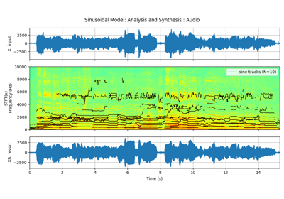

Note
Go to the end to download the full example code or to run this example in your browser via JupyterLite or Binder
Sinusoidal Model: Analysis and Synthesis¶
# Sinusoidal Model: Analysis and Synthesis
In this example, first we decompose an audio file into ONLY 20 sinusoidal tracks and then reconstruct an audio from it. We will also examin the residual.
Before starting, listen following three audio files, that are the same as generated from this example.
Resulting Sinusoidal Model
Original Audio
Reconstructed Audio
Residual Audio
Example¶
import numpy as np
import matplotlib.pyplot as plt
import requests, logging, os
from scipy.io import wavfile
import spkit as sp
print('spkit-version :',sp.__version__)
spkit-version : 0.0.9.7
Download audio file¶
path = 'https://github.com/spkit/data_samples/raw/main/files/singing-female.wav?raw=true'
file_name = 'singing-female.wav'
if not(os.path.exists(file_name)):
req = requests.get(path)
with open(file_name, 'wb') as f:
f.write(req.content)
fs, x = wavfile.read(file_name)
t = np.arange(len(x))/fs
STFT of Audio¶
mXt,pXt = sp.stft_analysis(x, winlen=441, overlap=220,window='blackmanharris',nfft=None)
plt.figure(figsize=(13,6))
plt.subplot(211)
plt.plot(t,x)
plt.xlim([t[0],t[-1]])
plt.grid()
plt.title('Original audio')
plt.ylabel('amplitude (μV)')
plt.subplot(212)
plt.imshow(mXt.T,aspect='auto',origin='lower',cmap='jet',extent=[t[0],t[-1],0,fs/2])
plt.title('Spectrogram')
plt.ylabel('frequency (Hz)')
plt.xlabel('time (s)')
plt.tight_layout()
plt.show()
Analysis of Audio with only 20 sinusodal tracks¶
N = 20
fXst, mXst, pXst = sp.sineModel_analysis(x,fs,winlen=3001,overlap=750,
window='blackmanharris', nfft=None, thr=-10,
maxn_sines=N,minDur=0.01, freq_devOffset=10,freq_devSlope=0.1)
print(fXst.shape, mXst.shape, pXst.shape)
# plotting only frequency which have magnitude > 0dB
fXt1 = (fXst.copy())*(mXst>0)
fXt1[fXt1==0]=np.nan
plt.figure(figsize=(13,7))
plt.subplot(211)
plt.plot(t,x)
plt.xlim([t[0],t[-1]])
plt.grid()
plt.title('Original Audio')
plt.ylabel('amplitude (μV)')
plt.subplot(212)
plt.imshow(mXt.T,aspect='auto',origin='lower',cmap='jet',extent=[t[0],t[-1],0,fs/2])
plt.title('Spectrogram')
tx = t[-1]*np.arange(fXt1.shape[0])/fXt1.shape[0]
plt.plot(tx,fXt1,'-k',alpha=0.5)
plt.xlim([0,tx[-1]])
plt.title(f'Sinusoidal tracks: n={N}')
plt.xlabel('time (s)')
plt.ylabel('frequency (Hz)')
plt.grid(alpha=0.3)
plt.tight_layout()
plt.show()
(363, 20) (363, 20) (363, 20)
Synthesis of Audio from 20 sinusodal tracks¶
Xr = sp.sineModel_synthesis(fXst, mXst, pXst,fs,overlap=750)
print(Xr.shape)
mXrt,pXrt = sp.stft_analysis(Xr, winlen=441, overlap=220,window='blackmanharris',nfft=None)
plt.figure(figsize=(13,6))
plt.subplot(211)
plt.plot(t,Xr[:len(x)])
plt.xlim([t[0],t[-1]])
plt.grid()
plt.title(f'Reconstructed Audio from {N} Sinusoidal: $x_r(t)$')
plt.ylabel('amplitude (μV)')
plt.subplot(212)
plt.imshow(mXrt.T,aspect='auto',origin='lower',cmap='jet',extent=[t[0],t[-1],0,fs/2])
plt.title(r'Spectrogram of $x_r(t)$')
plt.xlabel('time (s)')
plt.ylabel('frequency (Hz)')
plt.tight_layout()
plt.show()
(273000,)
Residual: Discarded part of Audio - mostly hissing sound¶
Xd = x - Xr[:len(x)]
mXdt,pXdt = sp.stft_analysis(Xd, winlen=441, overlap=220,window='blackmanharris',nfft=None)
plt.figure(figsize=(13,6))
plt.subplot(211)
plt.plot(t,Xd)
plt.xlim([t[0],t[-1]])
plt.grid()
plt.title(r'Residual: Discarded part of Audio: $x_d(t) = x(t)-x_r(t)$')
plt.ylabel('amplitude (μV)')
plt.subplot(212)
plt.imshow(mXdt.T,aspect='auto',origin='lower',cmap='jet',extent=[t[0],t[-1],0,fs/2])
plt.title(r'Spectrogram of $x_d(t)$')
plt.ylabel('frequency (Hz)')
plt.tight_layout()
plt.show()
Save files and Play with Jupyter¶
import IPython wavfile.write(f"sinmodel_recons_"+file_name, rate=fs, data=Xr[:len(x)].astype(np.int16)) wavfile.write(f"sinmodel_residual_"+file_name, rate=fs, data=Xd.astype(np.int16)) display(IPython.display.Audio(data=x,rate=fs)) display(IPython.display.Audio(data=Xr[:len(x)],rate=fs)) display(IPython.display.Audio(data=Xd,rate=fs))Original Audio
Reconstructed Audio
Residual Audio
Total running time of the script: (0 minutes 2.369 seconds)
Related examples



Sinusoidal Model : Synthesis : Audio
Sinusoidal Model : Synthesis : Audio